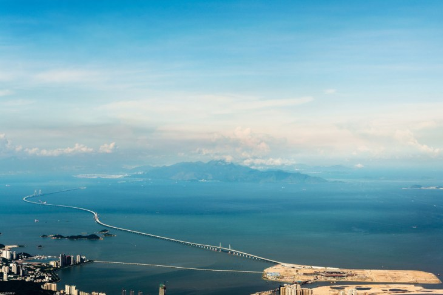
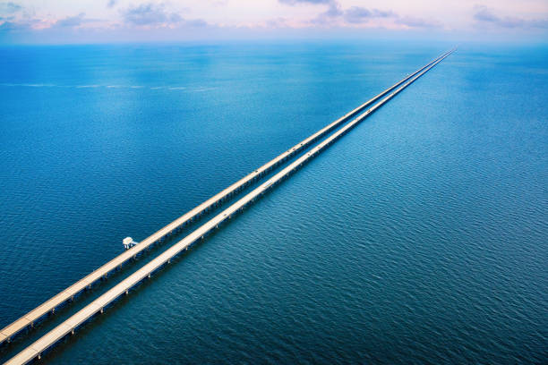
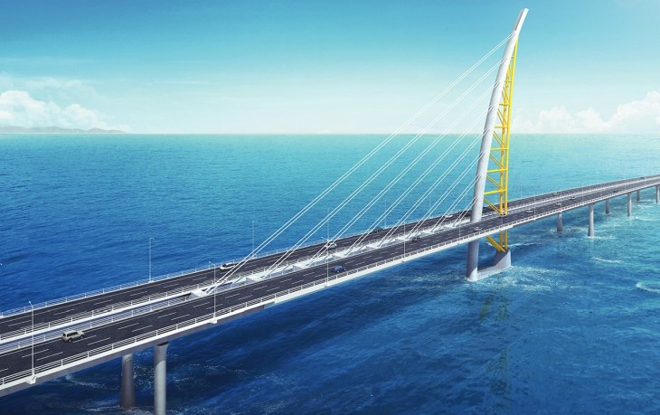

1 MIEJSCE
 Hong Kong-Zhuhai-Macau, ChinyDługość: 41,6 km
Most z tunelem łączy Hongkong, Guangdong Zhuhai i Makau. Przeprawa biegnie od sztucznej wyspy w pobliżu lotniska Hong Kong International Airport na wschód, przekracza obszar Lingdingyang w delcie Rzeki Perłowej na wodach Morza Południowochińskiego, komunikuje Zhuhai i sztuczną wyspę w Makau, i dociera do terminalu Zhuhai Hongwan. Budowę prowadzono w latach 2009–2017. Obiekt otwarto 18 października 2018 r.Długość od portu w Hong Kongu do portu Zhuhai i portu w Makau wynosi około 42 km i obejmuje 12-kilometrową przeprawę Hong Kong Link Road i liczący 29,6 km most główny. Całkowita długość Hong Kong-Zhuhai-Macau (HZMB) wynosi 55 km, wliczając tunel Zhuhai Link Road i drogę . Przez obiekt prowadzi droga z sześcioma pasami na dwóch jezdniach (po trzy). Dopuszczalna prędkość to 100 km/godz. Most jest przedzielony liczącym 5,7 km tunelem o szerokości 28,5 m i wysokości 5,1 m. Przeprawa skłąda się z 224 pomostów i siedmiu pylonów. Jest szeroka na 33,1 m. Zaprojektowany okres użytkowania mostu wynosi 120 lat. Obiekt może wytrzymać trzęsienie ziemi o sile 8, tajfun o sile 16, uderzenie o masie 300 tys. ton i 300-letnią powódź w ujściu rzeki Perłowej. Inwestycja pochłonęła niebotyczną sumę 18,8 mld dol.
2 MIEJSCE
 Lake Pontchartrain, Stany Zjednoczone Długość: 38,35 kmDwa równoległe mosty poprowadzono nad jeziorem Pontchartrain w południowej części stanu Luizjana. Dłuższy ma 38,35 km długości. Południowy koniec znajduje się w Metairie w Luizjanie, na przedmieściach Nowego Orleanu. Północny w Mandeville w Luizjanie. Przeprawy są wsparte na 9500 betonowych palach. Oba mają przęsła zwodzone na potrzeby żeglugowej drogi wodnej. Południową przeprawą budowano od 1955 r., a oddano do użytku 30 sierpnia 1956 r. Budowa północnej rozpoczęła się w 1967 r., a otwarto ją w 1969 r. Obie konstrukcje dzieliło 14 lat. Koszt mostów wyniósł łącznie 76 mln dol. z tamtych czasów. Pomost znajduje się na wysokości 4,7 m nad poziomem wody. Mosty mają dwie dwupasowe jezdnie, a ich szerokość wynosi 8,5 m. Wykonawcą południowej nitki było przedsiębiorstwo Louisiana Bridge Company, a północnej Prestressed Concrete Products. Nowsza jest o 15 m dłuższa, a odstęp między mostami wynosi 25,6 m. Inwestycja pozwoliła skrócić podróże z małych miejscowości North Shore do Nowego Orleanu o 50 min.
3 MIEJSCE
 Sheikh Jaber Al-Ahmad Al-Sabah, Kuwejt Długość: 37 kmSheikh Jaber Al-Ahmad Al-Sabah znajduje się w Kuwejcie na Bliskim Wschodzie. Nazwa upamiętnia prezydenta Kuwejtu Emira, który był u władzy podczas wojny w Zatoce Perskiej. Most przekracza Zatokę Kuwejcką i łączy Kuwejt z Madinat al-Hareer (Jedwabne Miasto). Budowano go od listopada 2013 r. przez cztery lata, ale otwarto dopiero 1 maja 2019 r. Inwestycja oznaczała wydatek 3 mld dol. (całość licząca 48,5 km z drogami i wiaduktem na lądzie). Przy długości mostu 37 km bezpośrednio nad wodą znajduje się część licząca 34,9 km. Pylon wznosi się na 151 m (jest inspirowany żaglami tradycyjnymi statków), najdłuższe przęsło ma 177 m, pomost znajduje się na wysokości 23 m nad poziomem morza. Na obu nitkach znajdują się trzypasowe jezdnie z dodatkowym pasem bezpieczeństwa. Podczas robót powstały dwie sztuczne wyspy o powierzchniach 300 tys. m2 i 600 tys. m2. Most jest nadzorowany przez system SCADA, a ruch i sytuację na przeprawie śledzi 600 kamer. Inne nazwy przeprawy to Kuwait Bay Bridge i Jaber link Doha Bridge. Właścicielem obiektu jest kuwejckie Ministerstwo Robót Publicznych, projekt opracowała spółka Systra, a wykonawcą była firma Hyundai Engineering & Construction. Żywotność mostu wynosi 100 lat.